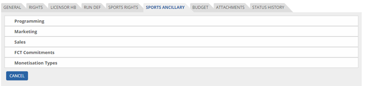
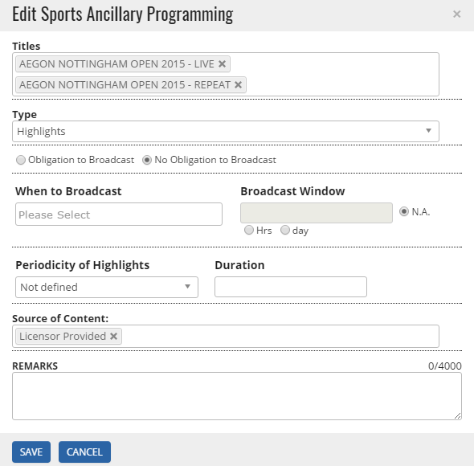
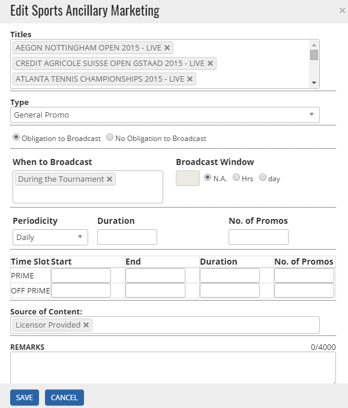
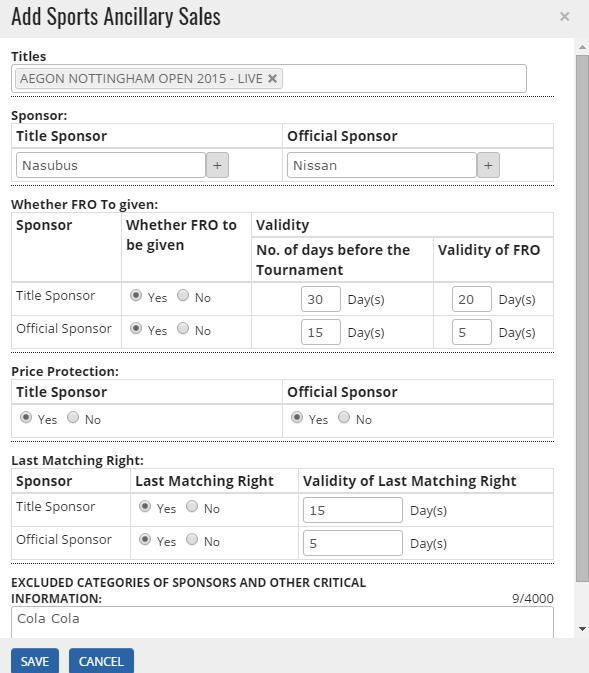
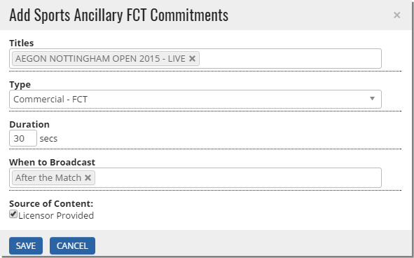
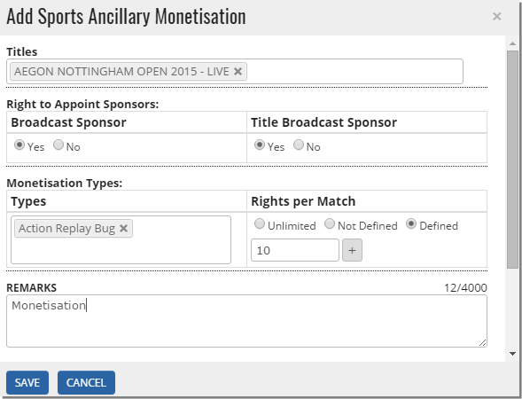


	<section>
		<article>
			<h2>Sports Ancillary<span></span></h2>
			<div>
				<p></p>
				<p>Ancillary rights for acquired sports deal are added in this tab. User will click on Sports Ancillary tab which will look like below.</p>

				<div class="triangle-border top">				
					
				</div>

				<p>This tab is divided into 5 main parts:</p>

				<p><b>Programming</b> - User will enter respective fields and click on Save to save sports ancillary rights for programming.</p>

				<div class="triangle-border top">				
					
				</div>

				<p><b>Marketing</b> - User can enter marketing details for sports deal here. Fill all the fields and Save it.</p>

				<div class="triangle-border top">				
					
				</div>

				<p><b>Sales</b> - This is used to enter Sales information related to Sports Property.</p>

				<div class="triangle-border top">				
					
				</div>

				<p><b>FCT Commitments</b> - This is used to enter any FCT Commitments related to a sports property.</p>

				<div class="triangle-border top">				
					
				</div>

				<p><b>Monetisation Types</b> - This is used to enter any Monetisation related information for a sports property.</p>

				<div class="triangle-border top">				
					
				</div>

			</div>
		</article>
	</section>